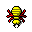

Over Chip's Challenge
Chip's Challenge is een puzzelspel dat oorspronkelijk werd uitgebracht in 1989. Het spel volgt de avonturen van Chip McCallahan, die door verschillende niveaus moet navigeren om microchips te verzamelen en puzzels op te lossen.
Gameplay
In elk niveau moet Chip een bepaald aantal microchips verzamelen om de uitgang te bereiken. Onderweg moet hij obstakels vermijden, sleutels verzamelen om deuren te openen en verschillende puzzels oplossen.
Populariteit
Chip's Challenge heeft een cultstatus bereikt onder retro gamers en blijft populair vanwege zijn uitdagende verslavende gameplay.
Monsters
Er zijn verschillende soorten monsters in het spel, ±10 in totaal. Hieronder vind je een oplijsting van enkele van hen.
Bug
De Bug beweegt zich in een rechte lijn en verandert van richting wanneer hij een obstakel raakt.
Fireball

De Fireball beweegt zich in een rechte lijn en kan door vuur lopen zonder schade op te lopen.
Blob

De Blob beweegt zich willekeurig en kan moeilijk te voorspellen zijn.
Paramecium

De Paramecium beweegt zich langs de muren van het doolhof en verandert van richting bij obstakels.
Teeth

De Teeth volgt Chip en probeert hem te vangen door zijn bewegingen te volgen.
Informatie
| Kenmerk | Beschrijving |
|---|---|
| Ontwikkelaar | Bedrijf: Epyx |
| Ontwerper: Chuck Sommerville | |
| Uitgevers | Atari Corporation (Lynx), U.S. Gold (ST, Amiga, Spectrum), Epyx (MS-DOS), Microsoft Home (Windows), Pixel Games UK (Switch) |
| Platforms | Windows, MS-DOS, Atari Lynx, Atari ST, Amiga, Commodore 64, ZX Spectrum, Amstrad CPC, Nintendo Switch |
| Releasejaar | 1989 |
| Genre | Puzzel |
| Modus | Single-player |
| Bron: Chuck Sommerville, Epyx | |